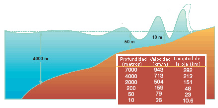
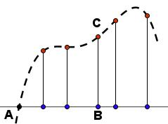

Acabamos de ver varios ejemplos en los que las gráficas resultan un medio de expresión muy útil para representar las relaciones que existen entre dos variables. De su forma, las personas entrenadas para entenderlas, son capaces de extraer, interpretar y comunicar la información que contienen.
Por ejemplo, la altura que alcanzan los zigzags de las líneas del sismógrafo, nos dan idea de la magnitud del terremoto. La repetición continua de pequeñas ondulaciones, pueden indicar la proximidad de un gran temblor, que en el caso de ocurrir en medio del océano puede servir como aviso de un tsunami para las poblaciones costeras al epicentro del seísmo.

Esta imagen muestra cómo la ola de un tsunami cambia de forma a medida que avanza hacia agua poco profundas.Plano cartesiano
|
En la actualidad, la herramienta que se emplea para representar objetos matemáticos en dos dimensiones es el plano cartesiano. Este plano cartesiano está formado por dos rectas graduadas numéricamente y perpendiculares entre sí. Al eje horizontal se le denomina de abscisas, eje X, o eje \( \mathbf{\overrightarrow{\textrm{OX}}}\) en tanto que al vertical se le llama de ordenadas, eje Y o eje \(\mathbf{\overrightarrow{\textrm{OY}}}\). El origen de ordenadas, que se denomina O, es el punto donde se cortan los dos ejes. |

Las escalas en las que se miden ambos ejes pueden no coincidir.
Cualquier punto del plano cartesiano viene determinado por dos coordenadas, la abscisa "\(x\)", y la ordenada "\(y\)".
Completa
Veamos un ejercicio en donde el plano de coordenadas nos permite presentar de forma aislada puntos que relacionan dos variables: minutos jugados y puntos obtenidos.
Como podrás observar, estos puntos aislados no determinan una curva en el plano. Además, como veremos más adelante, la relación que existe entre las dos variables no es funcional.
Aún así, la información que obtenemos al expresar de manera gráfica la relación entre los minutos jugados y los puntos obtenidos, es muy rica, y nos permite obtener fácil y rápidamente conclusiones sobre la eficacia puntuadora de los jugadores.
Un partido de baloncesto que enfrentó al Caja Laboral y el DKV Joventut, finalizó con un 98-78 favorable al primer equipo.
En el gráfico de la izquierda puedes ver los minutos que estuvieron en la cancha los jugadores del Caja Laboral, y los puntos que consiguió cada uno de ellos. En el de la derecha, están dibujados cinco puntos en un plano de coordenadas. Representan a cinco jugadores del Caja Laboral. Teniendo en cuenta que en el eje de abscisas se miden los minutos jugados, y en el de ordenadas los puntos obtenidos. Completa las frases que aparecen a continuación.


💡A tener en cuenta:
-
Teletovic es el jugador que más punto consiguió, por tanto le corresponde el punto más alto.
-
San Emeterio es el que más minutos jugó, por lo que se le asocia el punto que se encuentra más a la derecha.
-
Bjelica jugó pocos minutos y consiguió pocos puntos, aunque no el que menos, luego ha de ser el punto más a la izquierda, pero no el más bajo.
Un poco de historia
René Descartes, pensador y matemático francés, es la fuente a la que se acude cuando buscamos el origen de la representación gráfica de objetos matemáticos.
En su obra "El discurso del método", traza las líneas generales de lo que posteriormente se denominaría geometría analítica.
| Descartes asocia una "ecuación" a una curva de la siguiente forma: desde un punto A fijo, halla la relación que existe entre las longitudes de los segmentos \(\overset{\vdash \hspace{-.1em} \rule[1.15mm]{1.8 mm}{0.15mm} \hspace{-.1em} \dashv}{\mathrm{AB}} \) y \(\overset{\vdash \hspace{-.1em} \rule[1.15mm]{1.8 mm}{0.15mm} \hspace{-.1em} \dashv}{\mathrm{BC}} \), teniendo en cuenta que \(B\) se mueve en una recta que pasa por \(A\), y \(C\) se mueve en la curva con la condición de que todos los segmentos \(\overset{\vdash \hspace{-.1em} \rule[1.15mm]{1.8 mm}{0.15mm} \hspace{-.1em} \dashv}{\mathrm{BC}} \) que se obtienen son paralelos entre sí. |  |
Sería una inmensa injusticia no recordar a quienes antes que Descartes hicieron intentos de compenetrar geometría y álgebra. Entre muchos otros, debemos mencionar a los astrónomos griegos Hiparco y Ptolomeo, o el obispo francés Nicolás Oresme.
Por último, es necesario hacer referencia a la obra "Lugares geométricos planos y sólidos" del también pensador francés Pierre de Fermat. En ella se vislumbra un método para asociar "ecuaciones" a curvas que vienen dadas por la relación entre dos "magnitudes desconocidas".